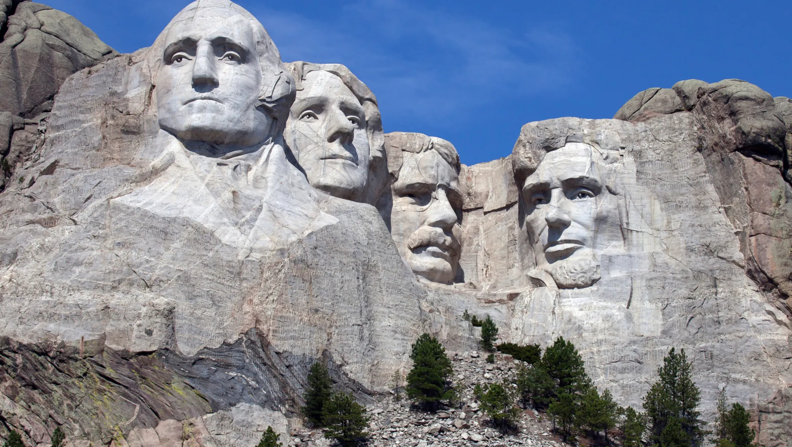
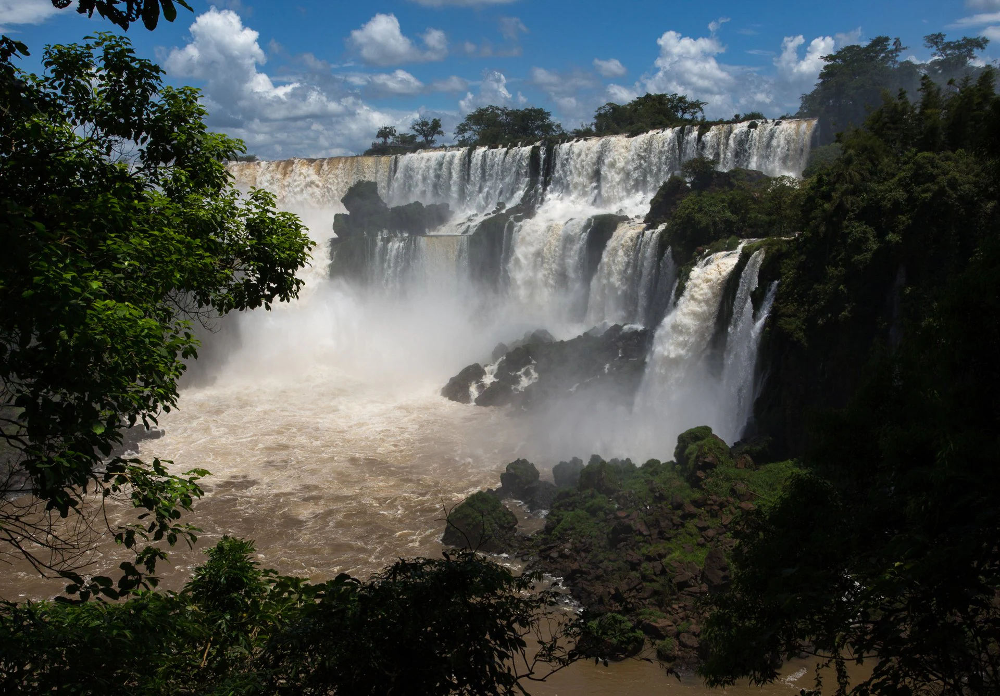

Home
NORTH AMERICA
Geographical facts of North America
It is surrounded by Arctic Ocean in the north, Atlantic Ocean in the east and Pacific Ocean in the west.
Colorado plateau is the largest plateau located in North America. It bisected by the Colorado River and the Grand Canyon.
It is connected with South America through the Isthmus of Panama.
Grand Bank near Newfoundland and Georges Bank near Nova Scotia are extensive fishing grounds in North America.
The Wood Buffalo National Park is world largest national park located in Alberta province of Canada.
It is surrounded by Arctic Ocean in the north, Atlantic Ocean in the east and Pacific Ocean in the west.
Countries of North America

>
U.S.A.
Mexico
Canada
Guatemala
Many More
*************************************************************************************************
SOUTH AMERICA
Geographical facts of South America

>
Angel Falls in Venezuela is one of the largest waterfalls in the world with a height of almost 1 kilometre.
It has the shortest coastline, compared to its size, of any continent.
There are 77 uncontacted tribes living in the Amazon Jungle.
The worlds most southerly city is located at the tip of Argentina and is called Ushuaia.
History says that the continent of South America was once connected to the continent of Africa.
The world’s driest, highest waterfalls, largest river basins, and longest mountain ranges have all been in South America.
Fun Facts about South America
Colombia produces more than 90% of the worlds emeralds.
Bolivia was the first country to get rid of McDonalds.
Latin America is the most urbanized continent in the world with almost 80% of its citizens living in cities.
Costa Rica has been ranked as the happiest country in the world.
Mexico is sinking by around 10 inches every year.
Countries of South America
Brazil
Peru
Venezuela
Many More
To know more click on
North America
or
South America